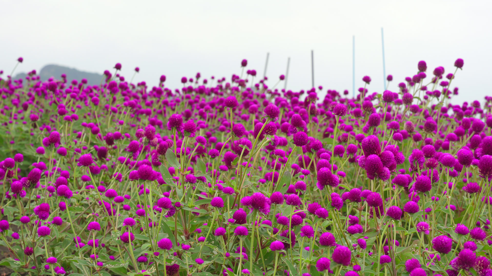
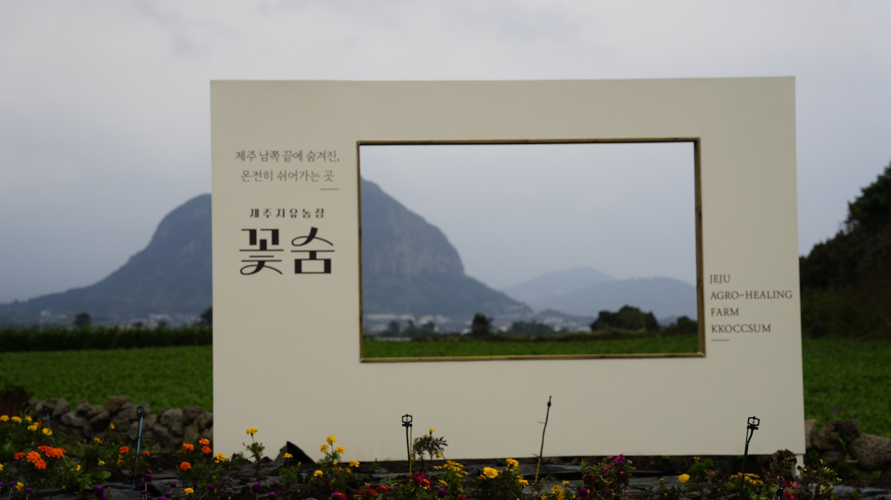
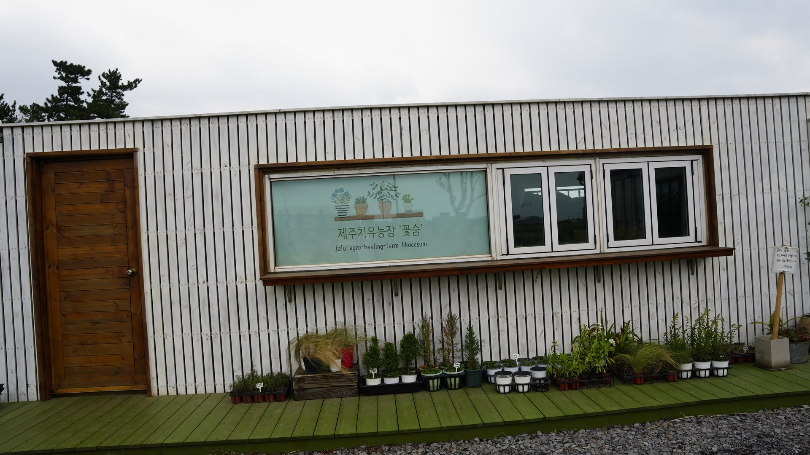
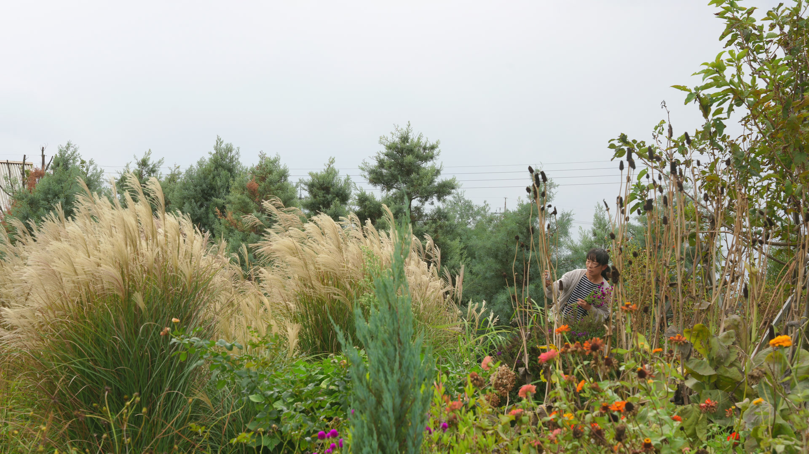
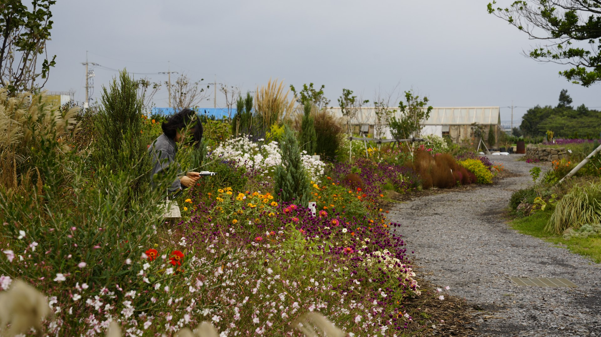
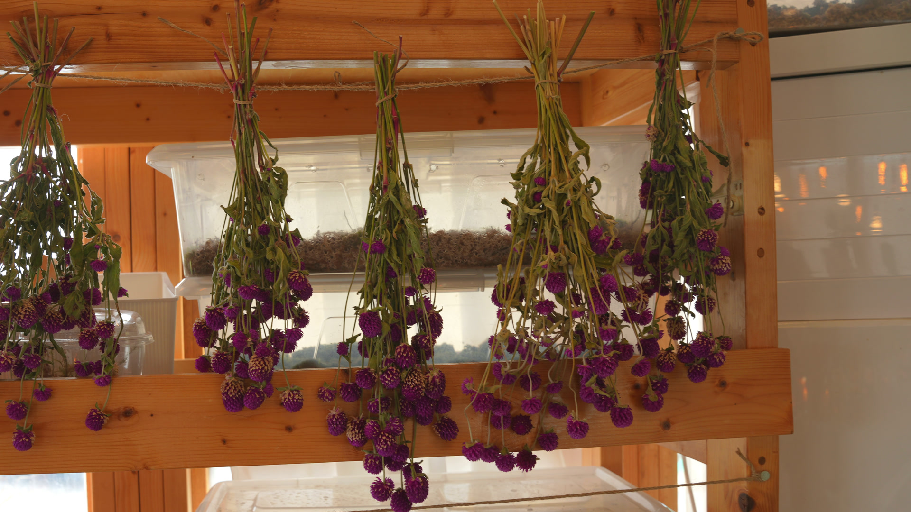
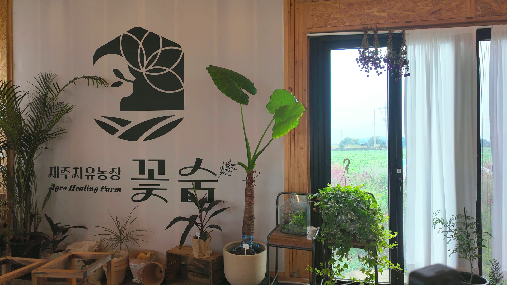
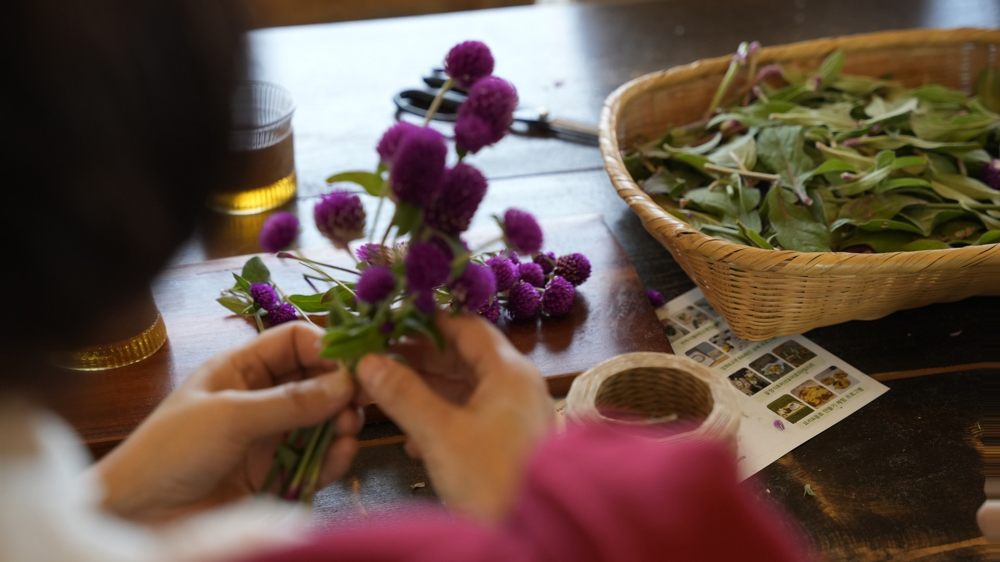
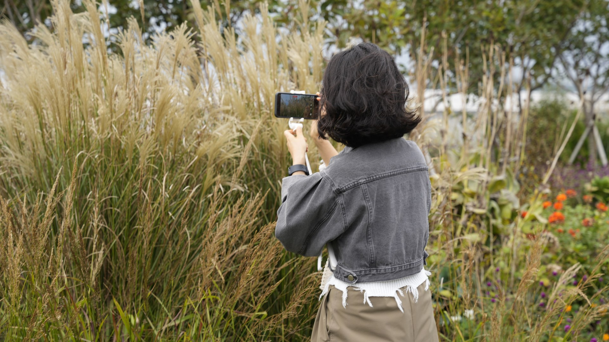

제주치유농장 꽃숨
천일홍 꽃밭과 정원, 쉬어 가는 공간, 산방산 포토존 — 이수영 대표가 직접 들려주는 꽃숨 이야기. · 촬영·편집 제주그래퍼 JEJUGRAPHER · 2026년 10월
바람은 불었지만 예쁜 사진을 담으며 즐거운 시간을 보낸 사람들의 하루. · 촬영·편집 제주그래퍼 JEJUGRAPHER · 2026년 10월

제주 남쪽, 산방산이 보이는 들판에 꽃으로 쉬어 가는 치유농장이 있습니다. 제주치유농장 꽃숨입니다.

“제주 남쪽 끝에 숨겨진, 온전히 쉬어가는 곳.” 포토존에 적힌 말 그대로, 농장은 들판 끝에 조용히 서 있습니다.
제주의 치유농장은 대부분 감귤을 자원으로 삼습니다. 꽃숨은 꽃을 가지고 치유농업을 합니다.

“4월부터 11월까지는 꽃이 항상 있는 것 같아요.” 계절이 바뀔 때마다 정원의 꽃도 바뀝니다.

정원을 가로지르는 길을 따라 억새와 들꽃이 이어집니다. 천천히 걷는 동안 숨이 느려집니다.

꽃은 말리면 보통 색이 바래지만, 천일홍은 말려도 색이 천 일 동안 간다고 해서 천일홍이라 부릅니다.

나무로 지은 실내에서 차를 마시며 이야기를 나누고, 창밖으로 꽃밭과 들판을 바라봅니다.

꽃을 돌려 가며 잡는 핸드타이드 기법으로 다발을 엮습니다. “이 안에서 꽃들이 놀아야 돼요.”

“아무 생각 없이 손만 움직이는…” 꽃을 만지는 동안 마음이 고요해집니다. 오늘 만든 꽃다발은 집에 가져가 벽에 걸어 둡니다.
옆으로 밀어 넘기세요 · 키보드 ← → 로도 넘어갑니다